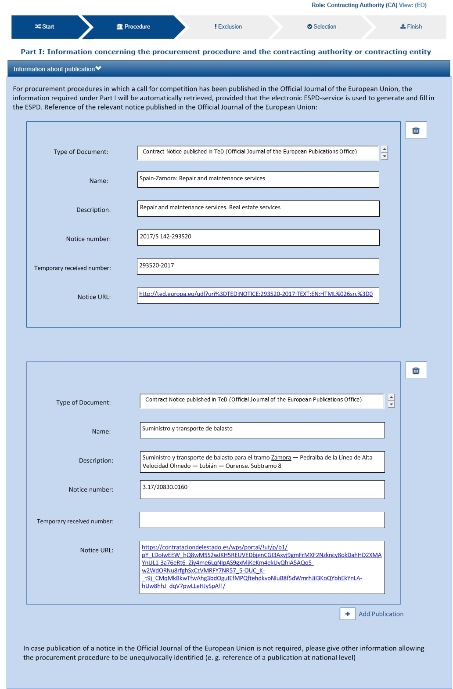
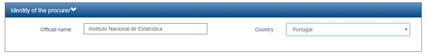

The ESPD Request Document
ESPD Request Business Requirements
The ESPD-EDM models the business and information requirements in alignment with the works developed by e-Sens, which uses the identifier Trdm070 to refer to the business requirements regarding the ESPD Request transaction. See formal information requirements related to the ESPD Request transaction in the document Business Requirements: ESPD request transaction (Trdm070), by e-Sens.
ESPD Request XSD Schema
The ESPD-EDM uses the UBL-2.3 document named QualificationApplicationRequest.xsd XSD Schema. This schema can be found under the GitHub folder ubl-2.3/xsdrt/maindoc (or the equivalent documented xsd folder).
The figure below shows a diagram representing the UBL-2.3 XSD Schema. Only the first level components of the schema are shown. The inner sub-elements and sub-classes are covered in detail in the following sub-sections of this document.
Figure 1. QualificationApplicationRequest-2.3 main elements
ESPD Request cardinalities
The UBL-2.3 Schema is quite flexible as, except for in a few cases, all the elements are optional.
The ESPD-EDM model, however, adds a few more restrictions regarding the cardinalities of some elements. These can be seen in the diagram below, which presents the ESPD-EDM structure for the ESPD Request with its cardinality restrictions.
Figure 2. ESPD-EDM 'QualificationApplicationRequest', UML diagram
Comparing both figures, it can be observed that:
-
The cardinalities of the root common basic components, such as cbc:ID, cbc:UUID, differ in the ESPD from in UBL-2.3;
-
Similarly, the cardinalities of aggregate components like cac:ContractingParty and cac:TenderingCriterion also differ in the ESPD from in UBL-2.3.
The cardinality constraints added by the ESPD are not defined in the XSD Schema. To control these constraints, the ESPD-EDM uses ISO Schematron assertions. The ESPD-EDM distribution package provides Schematron schemata and CVA files for the validation of the XML instances (folder /validation).
Root elements
The tables below establish a mapping between the business requirements, the logic layer of the ESPD-EDM, and the UBL-2.3 physical layer. They list the elements that are expected in the ESPD Request and provide details on the cardinalities and usage of those elements.
|
A note about the Business Rules identifiers From this point in the document, the tables defining classes and its properties refer frequently to business rules. As stated in the e-Sens BIS document, "[..] business rules are sets of rules that clarify the content of instances by stating mandatory fields, fixed values (like code lists), dependency between fields in the same object, and dependency between different objects". Information requirement: Note that all these documents share the same business rule identifiers (e.g. tbrxx-yyy for Business Requirement Identifiers in ESPDInt, and BR-Type-Id#n for the Test Cases technical rules). |
The table below shows the mapping between the business requirements, the logic layer of the ESPD-EDM, and the UBL-2.3 physical layer:
Table 5. Class QualificationApplicationRequest, components required by the ESPD-EDM
| Document name: | QualificationApplicationRequest |
|---|---|
Definition 1: |
"A structured electronic business document for requesting qualification information through an ESPD (conform to an ESPD template). Directive 2014/24/EU, Art. 59." (source: ESPD Request transaction (Trdm070)). Document provided by a buyer defining the exclusion and selection criteria for a given procurement procedure. |
Business rule(s): |
None |
File: |
/ubl-2.3/xsd/maindoc/UBL-QualificationApplicationRequest-2.3.xsd |
Components |
Type |
Card |
Description |
Requirements + |
|---|---|---|---|---|
cbc:UBLVersionID |
Identifier |
1 |
Identifies the earliest version of the UBL 2 schema for this document type that defines all of the elements that might be encountered in the current instance. |
Information Requirement: tbr70-002. Rule: Use the value "2.3". Use also "OASIS-UBL-TC" for the schemeAgencyID attribute. Rule scope: Common (BR-OTH-05, 2.BR-OTH-02) |
cbc:ProfileExecutionID |
Identifier |
1 |
The identification and version of the ESPD Exchange Data Model used to create the XML instance. The identification may include the exact version of the specification. |
Information Requirement: tbr70-002. Rule: Compulsory use of the CodeList ProfileExecutionID. Use the value "OP" for th SchemeAgencyID attribute. Rule scope: Common (BR-OTH-01, BR-OTH-01#13, BR-OTH-03) |
cbc:ID |
Identifier |
1 |
An identifier for this document, normally generated by the system that creates the ESPD document, or the organisation responsible for the document (e.g. the buyer, e.g. a buyer, or the supplier, e.g. an economic operator). The identifier enables referencing the document instance for various purposes including referencing between transactions that are part of the same process. |
Information Requirement: tbr70-002. Rule: Compulsory use of schemeAgencyID attribute. Use it to identify the organisation responsible for the document. Rule scope: Common (BR-OTH-02) |
cbc:CopyIndicator |
Indicator |
0..1 |
Indicates whether this document is a copy (true) or not (false). |
Information Requirement: tbr70-002. Rule: It is a good practice to use the CopyIndicator component if the same document is forwarded several times to the same or to different destinations. Use it in combination with the UUID identifier: copies of an ESPD document should be identified with same UUIDs. |
cbc:UUID |
Identifier |
1 |
A universally unique identifier that can be used to reference this ESPD document instance. |
Information Requirement: tbr70-002. Rule: This UUID will be used to link the ESPD Response to its corresponding ESPD Request (thus it being compulsory). Copies of a document must be identified with a different UUID. Compulsory use of schemeAgencyID attribute. Rule scope: BR-OTH-02 |
cbc:ContractFolderID |
Identifier |
1 |
An identifier that is specified by the buyer and used as a reference number for all documents in the procurement process. It is also known as procurement project identifier, procurement reference number or contract folder identifier. A reference to the procurement procedure to which a Qualification request document and the delivered response documents are associated. |
Information Requirement: tbr70-007. Rule: Try always to use the reference number issued by the buyer. This information will be provided in eForms using the same cbc:ContractFolderID, therefore the ESPD should include the same identifier in order to link both models, and shall be globally unique. This number in combination with a registered buyer ID (e.g. the VAT number) results in a universally unique identifier of the procurement procedure. Rule scope: BR-SC-10 |
cbc:IssueDate |
Date |
1 |
Date when the document was issued by the buyer. |
Information Requirement: tbr70-002. Rule: Format "YYYY-MM-DD". |
cbc:IssueTime |
Time |
0..1 |
Time when the document was issued by the buyer. |
Information Requirement: tbr70-002. Rule: Format "hh:mm:ss". |
cbc:VersionID |
Identifier |
0..1 |
The version identifying the content of this document. |
Information Requirement: tbr70-014. Rule: Changes in content should entail the modification of the version identifier and a reference to the previous version. |
cbc:PreviousVersionID |
Identifier |
0..1 |
The version identifying the previous modification of the content of this document. |
Information Requirement: tbr70-014. Rule: None |
cbc:ProcedureCode |
Code |
1 |
The type of the procurement administrative procedure according to the EU Directives. |
Information Requirement: tbr70-007. Rule: For the ESPD, this information will be linked to eForms. And ESPD should include the same procedure code as the one stated in eForms notices. |
cac:ContractingParty |
Associated class |
1 |
The buyer or contracting entity who is buying supplies, services or public works using a tendering procedure as described in the applicable directive (Directives 2014/24/EU, 2014/25/EU). |
Information Requirement: tbr70-001. Rule: UBL-2.3 defines multiple cardinality ContractingParties presumably to allow joint procurements. However the ESPD only expects data about one buyer. The decision was made that in case of joint procurement the data collected in the ESPD would be about the leader of the joint procurement procedure. In ESPD the contracting party information will come from eForms. Which also uses cac:ContractingParty to specify the information about buyer. |
cac:ProcurementProject/ cbc:Description |
Text |
1 |
Text describing this procurement project. |
This element is required in the ESPD, however it should be identical to that provided in eForms. In general the corresponding eForm should feed the corresponding ESPD with the corresponding data. |
cac:TenderingCriterion |
Associated class |
1..n |
A tendering criterion describes a rule or a condition that is used by the contracting body to evaluate and compare tenders by economic operators and which will be used for the exclusion and the selection of candidates to the award decision. |
|
cac:TenderingCriterion/ cac:ProcurementProject LotReference/cbc:ID |
Identifier |
0..n |
One or more of the procurement project lots Identifier to which this criterion can be related to. |
Information Requirement: (see section Lot Management) Rule: This element is mandatory for all Selection Criteria with cardinality 1..n because different Selection Criteria can be associated with different procurement lots. This element is not necessary for exclusion grounds because exclusion grounds are applied to all procurements. |
cac:AdditionalDocument Reference |
Associated class |
0..n |
A reference to an additional document associated with this document. |
Information Requirement: tbr70-007. Rule: For procurement procedures above the threshold it is compulsory to make reference to the Contract Notice of the procedure published in TED. See section "Reference to the Contract Notice" for a complete example. |
Lot Management
The ESPD includes a change as to how lots are managed. This is an outcome of the alignment with eForms.
In this version the ESPD has the following logic:
There is one ESPD request stating the Exclusion Criteria and the Selection Criteria, but with differences with respect to version 2.1.1. The figure below shows the logic:
Figure 3. Overview of new lot management approach
The ESPD request includes exclusion grounds that are general for all the Lots into which the procedure is divided. However, for Selection Criteria, it is different since in the procedure it is possible to have Lots with different selection criteria. Therefore, in the ESPD request the different Selection Criteria has to include the reference to the lots which applies. It will be done using the UBL 2.3 cac:ProcurementProjectLotReference that includes cbc:TenderingCriterion.
Please generate an ESPD Request and ESPD Response documents on ESPD Demo Site to see full example.
From the Economic Operator’s side it is different. As in the image above there will be as many ESPD Responses as Lots, or Group of Lots, the EO wishes to tender for. If the EO wishes to participate in three Lots, they will need to fill in 3 ESPD Responses. For more details on this, please see the section on the ESPD Response.
Lot identifiers
This version of the ESPD changes the form to identify Lots and Groups of Lots, taking the eForms format. This change is done with the aim of improving the interoperability of both models.
Up to version 2.1.1, the lots were identified with the following structure, "Lot1, Lot2, Lot3". With the new approach (eForms), the Lots identifiers will be as follows:
|
Comment XXXX: set of 4 digits. By default, the numbering should be increased by 1 from one object to the following one of the same category and a leading 0 should be used to satisfy the 4 digit format if required |
EU and notice publications
REQUIREMENT tbr70-007 |
The Buyer must be able to provide information about official journals or gazettes where the procurement procedure is announced. For procurement projects above the threshold it is compulsory to refer to the Contract Notice published in TED. |
Software applications that conform to the ESPD will have to provide the means for the user to supply references to EU and notice publications about the procurement procedure, especially about Notices to which the ESPD is related.
Mock-up
The Figure below is a mock-up of how to collect the data expected to reference publications on official gazettes or journals. This mechanism can, of course, also be used for contracts below the threshold.

Figure 4. Publications, mock-up
XSD Schema
The ESPD EDM uses the UBL component cac:AdditionalDocumentReference to allow the inclusion of references to documents that might be considered relevant, amongst them the reference to the Contract Notice on the TED (for above-the-threshold contracts), and to possible Notices on national journals and boards.
The class used for this, cac:AdditionalDocumentReference ''is a'' cac:DocumentReference class defined in the UBL-2.3 Common Aggregate Components library).
Figure 5. cac:DocumentReference, XSD diagram
The class cac:AdditionalDocumentReference aggregates a subclass cac:Attachment that is used by ESPD to place the URI, the name of the document, and the descriptions.
Figure 6. Associated class cac:ExternalReference, XSD diagram
Expected elements
As can be seen from the XSD Schema, the cac:DocumentReference class has a rich data structure. However, to refer to publications such as the TED and national publications, the ESPD expects, at least, the following data:
The mapping between the business requirements, the logic layer of the ESPD-EDM, and the UBL-2.3 physical layer:
Table 6. Reference to additional documents, expected elements
Class name: |
cac:AdditionalDocumentReference |
Definition: |
A reference to an additional document associated with this document. |
Business rule(s): |
Common (BR-COM-10) |
File: |
ubl-2.3/xsdrt/common/UBL-CommonAggregateComponents-2.3.xsd |
Path: |
/QualificationApplicationRequest/cac:AdditionalDocumentReference |
Context of Use: |
In this case this reference points at a document published on the Supplement of the European Official Journal or on a national journal. |
| Components | Type | Card | Description | Requirements |
|---|---|---|---|---|
cbc:ID |
Identifier |
1 |
The identifier for the referenced document, generally issued by the entity responsible for the document. |
Information Requirement: tbr70-007. Rule: If the document referenced is a Contract Notice published on TED, the ID must follow the scheme defined by the Publications Office: [][][][]/S [][][]-[][][][][][] (e.g. 2015/S 252-461137). If, at the time of drafting the ESPD document, the Publication Office has not yet published the Contract Notice, the value 0000/S 000-000000 value must be used to indicate that a temporary identifier is being used. Rule scope: Common (BR-COM-10#1, BR-OTH-02) |
cbc:UUID |
Identifier |
0..1 |
A universally unique identifier that can be used to reference this ESPD document instance. |
Information Requirement: tbr92-013. Rule: If the referenced document has a UUID to identify its particular instance, refer to that UUID here. |
cbc:DocumentTypeCode |
Code |
1 |
The type of document being referenced, expressed as a code. |
Information Requirement: tbr70-007. Rule: For the ESPD-EDM it is compulsory to use the Code List "docref-content-type". See the example below on how to specify the OJS Contract Notice. If, for other documents, the type of document is not available in this list, provide the code "Other" and describe the content in the element DocumentType. Rule scope: Common (BR-OTH-01, BR-OTH-01#3, BR-OTH-03) |
cbc:DocumentType |
Text |
0..1 |
The type of document being referenced, expressed as text. |
Information Requirement: tbr70-007. Rule: The attribute "languageID" may be used optionally to indicate the language of the text. Use the Code List "Language" for the value of the languageID attribute. Rule scope: Common (BR-OTH-01, BR-OTH-01#4, BR-OTH-03) |
cbc:IssueDate |
Date |
0..1 |
Date when the document was issued by the buyer. |
Information Requirement: tbr92-013. Rule: Format "YYYY-MM-DD". If the data of publication by the buyer is available in the referenced document, place it here. |
cbc:IssueTime |
Time |
0..1 |
Time when the document was issued by the buyer. |
Information Requirement: tbr92-013. Rule: If the time of publication by the buyer is available in the referenced document, place it here. |
Beware that the ESPD document does not embed the content of referenced documents, instead it makes a reference to its source. Thus the class 'DocumentReference' aggregates a 'cac:Attachment' class that allows for embedding the content or making reference to an external source of the content. This is the preferred way in the ESPD (see the XSD schema above):
The mapping between the business requirements, the logic layer of the ESPD-EDM, and the UBL-2.3 physical layer:
Table 7. External Reference
Component name: |
cac:ExternalReference |
Definition: |
A reference to the authentic source of content of this document. |
File: |
ubl-2.3/xsdrt/common/UBL-CommonAggregateComponents-2.3.xsd |
Path: |
/QualificationApplicationRequest /cac:AdditionalDocumentReference /cac:Attachment/cac:ExternalReference |
Components |
Type |
Card |
Description |
Requirements |
cbc:URI |
Identifier |
0..1 |
The Uniform Resource Identifier (URI) that identifies where the document is located. |
Information Requirement: tbr70-007. Rule: None. |
cbc:FileName |
Text |
0..1 |
The title of the document. |
Information Requirement: tbr70-007. Rule: Originally this field was the placeholder for the name of the file (e.g. PLACE-ContractNotice-2017-12452.xml). However, as the UBL component does not have a placeholder for a name or title, ESPD documents use it for a short descriptive title of the document being referenced. |
cbc:Description |
Text |
0..n |
Short description of the document. |
Information Requirement: tbr70-007. Rule: If the document being referenced is a Notice being published on TED, use two description lines. Use the second description line to for the temporary number received from TED. See example and comments below. Rule scope: Common (BR-COM-10#2, BR-COM-10-S10, BR-COM-10-S20, BR-COM-10-S30) |
XML Example
Please generate an ESPD Request and ESPD Response documents on ESPD Demo Site to see full example and how to use the cac:AdditionalDocumentReference in the ESPDRequest XML document to refer to a Contract Notice published in TED and on a national procurement board.
-
For TED Notices, the Publications Office Official Journal Supplement number must be used in its original format [][][][]/S [][][]-[][][][][][], e.g. 2017/S 142-293520. Notice that the schemeAgencyID is OP (OP standing for 'Publications Office').
-
The jurisdiction scope of this document is typified in the Code List docref-content-type (see file /codelists/gc/DocRefContentType.gc in the distribution package). Beware that the name and content of this Code List has changed from the previous ESPD-EDM version 2.1.1.
-
The actual content is never embedded in the ESPD documents. Rather the content is always referenced from its original source (alignment with the Once-Only-Principle).
-
The title of the CN must be placed in the FileName field of the attachment. UBL does not provide a placeholder for the title of the document.
-
If notice publication on TED happens at the same time the ESPD Request is prepared, the procurer will not yet have an OJS number. They can receive a temporary CN identifier (Received Notice Number). To save this number in the DocumentReference component, two cbc:Description elements must be created, and the second one used for the Received Notice Number. If you do not have a description for the CN then use dummy content for the first description, e.g. <cbc:Description>_</cbc:/Description>.
-
schemeAgencyID is used in this example to specify that the national Agency that created this reference to the national publication (e.g., "PLACE" to refer to the ID of the national electronic board where the CN was published). The pattern of the ID is the one created by the Spanish buyer.
-
In this case, the code NOJCN means 'Contract Notice (CN) published on a National Government Official Journal' (see file /codelists/gc/DocRefContentType.gc in the distribution package).
Contracting Body
Related information requirements
See formal requirements related to the contracting authorities in the e-Sens site: tbr70-001*
Mock-up
In principle, the ESPD-EDM asks for a few data about the procurer (i.e. the buyer, body or entity). The essential (compulsory) data for the contracting body are namely the one aimed to identify it, i.e. its official name and the country. The figure below represents a possible GUI interface for these two data. However the UBL specification provides many other data elements some of which may be interesting to include in the ESPD, notably data about the means to contact the contracting body (see below the list of elements possible in the ESPD).
Therefore software applications may make use of the richness of UBL-2.3 to collect data about the buyer contact, end-point, and other possible data in the ESPD.

Figure 7. Data about the procurer, mock-up
XSD Schema
The UBL-2.3 model provides a component that fits the purpose of holding data about the procurer: the common aggregate component cac:ContractingParty.
Figure 8. cac:ContractingParty XSD Schema, global vision
The cac:ContractingParty class is a specialisation of cac:Party. Hence, the main data about the procurer is in this associated cac:Party component:
Figure 9. cac:Party XSD Schema, global vision
The cac:Party class in turn associates a very rich class that holds the data about the Party address, including the country (see the UBL-2.3 specification for the complete list of fields):
Figure 10. cac:PostalAddress, XSD Schema
Notice also that the class associated to cac:Party to place the data about how to contact the contracting body:
Figure 11. cac:Contact, XSD Schema
Expected elements
The mapping between the business requirements, the logic layer of the ESPD-EDM and the UBL-2.3 physical layer:
Table 8. Contracting body, expected elements
Class name: |
cac:ContractingParty |
Definition: |
The buyer or contracting entity who is buying supplies, services or public works using a tendering procedure as described in the applicable directive (e.g. Directives 2014/24/EU, 2014/25/EU). |
Business rule(s): |
Common (BR-REQ-20#1) |
File: |
ubl-2.3/xsdrt/common/UBL-CommonAggregateComponents-2.3.xsd |
Path: |
/QualificationApplicationRequest/cac:ContractingParty |
Components |
Type |
Card |
Description |
Requirements |
cbc:BuyerProfileURI |
Identifier |
0..1 |
URL of the web section, in the contracting body web site, that contains information about the contracting body, the norms applied when contracting, published calls for tenders, Prior Information Notices and Contract Notices as well as the related procurement documents, contract award notices, etc. |
Information Requirement: tbr70-006. Rule: Notices published at national level shall not contain information other than that contained in the notices dispatched to the Publications Office of the European Union or published on a buyer profile, but shall indicate the date of dispatch of the notice to the Publications Office of the European Union or its publication on the buyer profile (Directive 2014/24/EU, Art. 52.2). |
The mapping between the business requirements, the logic layer of the ESPD-EDM and the UBL-2.3 physical layer:
Table 9. Contracting body party, expected elements
Class name: |
cac:Party |
Definition: |
Main data placeholder structure for, in this case, the contracting body. |
File: |
ubl-2.3/xsdrt/common/UBL-CommonAggregateComponents-2.3.xsd |
Path: |
/QualificationApplicationRequest/cac:ContractingParty/cac:Party |
Components |
Type |
Card |
Description |
Requirements |
cac:PartyIdentification/cbc:ID |
Identifier |
1 |
The national identifier of a contracting body as it is legally registered (e.g. VAT identification). |
Information Requirement: tbr70-001. Rule: When possible, use the VAT identification of the contracting body (see the VIES platform for a EU cross-border national VAT number verification system). When not possible, a different identifier may be used. The code list EOIDType may be used to indicate the type of identifier used as a value of the schemeID attribute, e.g. schemeID="VAT"). Rule scope: Common (BR-REQ-20#4, BR-OTH-02) |
cbc:WebsiteURI |
Identifier |
0..1 |
The website of the contracting body. |
Information Requirement: tbr70-006. Rule: For online services (e.g. Web Services, REST services, etc. use the component cac:EndPointID. |
cbc:EndPointID |
Identifier |
0..1 |
Electronic address of the contracting body. |
Information Requirement: tbr70-001. Rule: Use it for online services (e.g. Web Services, REST services, Delivery ID, ftp, etc. For the official web site of the Party use always the cac:Party/cbc:WebsiteURI). An end-point identifier MUST have a scheme identifier attribute (e.g.eSENSParty Identifier Scheme). Should be considered for all actors (buyer, service provider, economic operator) as an eDeliveryID. |
cac:PartyName/cbc:Name |
Text |
1 |
The name of the contracting body as it is registered. |
Information Requirement: tbr70-001. Rule: Mandatory. Use the official name of the contracting body. The PartyName class has an associated basic element "cbc:Name". See XML example below. Rule scope: Common (BR-REQ-20#2) |
The mapping between the business requirements, the logic layer of the ESPD-EDM and the UBL-2.3 physical layer:
Table 10. Contracting body postal address, expected elements
Class name: |
cac:PostalAddress |
Definition: |
Contracting body address information. |
Business rule(s): |
None |
File: |
ubl-2.3/xsdrt/common/UBL-CommonAggregateComponents-2.3.xsd |
Path: |
/QualificationApplicationRequest/ cac:ContractingParty/cac:Party/cac:PostalAddress |
Components |
Type |
Card |
Description |
Requirements |
cbc:StreetName |
Text |
0..1 |
The main address line in an address. Usually the street name and number or post office box. |
Information Requirement: tbr70-006. Rule: None. |
cbc:CityName |
Text |
0..1 |
The common name of a city where the address is located. |
Information Requirement: tbr70-006. Rule: None. |
cbc:PostalZone |
Text |
0..1 |
The identifier for an addressable group of properties according to the relevant postal service, such as a ZIP code or Post Code. |
Information Requirement: tbr70-006. Rule: None. |
cac:Country/cbc: IdentificationCode |
Code |
1 |
A code that identifies the country. |
Information Requirement: tbr70-006. Rule: The country of the contracting body must always be specified. Compulsory use of the code list Country from EU Vocabularies). Rule scope: Common (BR-REQ-20#3, BR-OTH-01, BR-OTH-01#5, BR-OTH-03) |
cac:Country/cbc:Name |
Text |
0..1 |
The name of the country. |
Information Requirement: tbr70-006. Rule: None. |
The mapping between the business requirements, the logic layer of the ESPD-EDM and the UBL-2.3 physical layer:
Table 11. Contact of the contracting body, expected elements
Class name: |
cac:Contact |
Definition: |
Used to provide contacting information for a party in general or a person. |
File: |
ubl-2.3/xsdrt/common/UBL-CommonAggregateComponents-2.3.xsd |
Path: |
/QualificationApplicationRequest/ cac:ContractingParty/cac:Party/cac:Contact |
Components |
Type |
Card |
Description |
Requirements |
cbc:Name |
Text |
0..1 |
The name of the contact point. |
Information Requirement: tbr70-006. Rule: None. |
cbc:Telephone |
Text |
0..1 |
A phone number for the contact point. |
Information Requirement: tbr70-006. Rule: None. |
cbc:Telefax |
Text |
0..1 |
A fax number for the contact point. |
Information Requirement: tbr70-006. Rule: None. |
cbc:ElectronicMail |
Text |
0..1 |
An e-mail address for the contact point. |
Information Requirement: tbr70-006. Rule: None. |
Service Provider
REQUIREMENT tbr70-011 |
The ESPD request may contain information of identification regarding an ESPD service provider: Name, Party Identification, Endpoint ID. |
Service providers are officially recognised organisations that can supply ESPD Request documents (on behalf of the contracting body) with pre-filled information about the contracting body and additional information (e.g. liability statements, see tbr70-012)
The ESPD allows the provision of data about the service provider who produced the ESPD Request document (and equally for the ESPD Response document, on behalf of the economic operator).
Since the 2.1.1 does not include the cac:ServiceProvider as a 'document root component'. Instead, it uses the UBL-2.3 cac:ContractingParty/cac:Party associated class cac:ServiceProviderParty.
XSD Schema
Figure 12. cac:ServiceProvider XSD Schema
Notice that:
-
The cac:Party class aggregates the class cac:ServiceProviderParty; and
-
The cac:ServiceProviderParty class 'is a' Party. Hence it aggregates a cac:Party class too, and uses it to place the main data about the service provider (like name, address, end-point, etc.).
Figure 13. cac:ServiceProvider
Figure 14. cac:ServiceProvider/cac:Party elements expected for the service provider
Expected elements
The mapping between the business requirements, the logic layer of the ESPD-EDM and the UBL-2.3 physical layer:
Table 12. Service provider, expected elements
Class name: |
cac:Party |
Definition: |
Main information about the service provider. |
Business rule(s): |
None |
File: |
ubl-2.3/xsdrt/common/UBL-CommonAggregateComponents-2.3.xsd |
Path: |
/QualificationApplicationRequest/ cac:ContractingParty/cac:Party/cac:ServiceProviderParty/ cac:Party |
| Components | Type | Card | Description | Requirements |
|---|---|---|---|---|
cbc:WebsiteURI |
Identifier |
0..1 |
The website of the service provider. |
Information Requirement: tbr70-011. Rule: Use it for the official web site of the service provider. Reserve the EndPointID for online services (e.g. web, REST, ftp services, etc.) |
cbc:EndpointID |
Identifier |
0..1 |
Electronic address of the service provider. |
Information Requirement: tbr70-011. Rule: Use it for online services (e.g. Web Services, REST services, Delivery ID, ftp, etc. For the official web site of the Party use always the cac:Party/cbc:WebsiteURI). An end-point identifier MUST have a scheme identifier attribute (e.g.eSENSParty Identifier Scheme). Should be considered for all actors (buyer, service provider, economic operator) as an eDeliveryID. |
cac:PartyIdentification/cbc:ID |
Identifier |
1 |
The national identifier of a service provider as it is legally registered (e.g. VAT identification). |
Information Requirement: tbr70-011. Rule: An identifier for the service provider must always be provided. Compulsory use of the attribute SchemeAgencyID. When possible use the VAT identification of the service provider (see the VIES platform for a EU cross-border national VAT number verification system). See XML example below. The code list EOIDType may be used to indicate the type of identifier used as a value of the schemeID attribute, e.g. schemeID="VAT"). Rule scope: Common (BR-REQ-20#5, BR-OTH-02") |
cac:PartyName/cbc:Name |
Text |
1 |
The name of the service provider. |
Information Requirement: tbr70-011. Rule: The name of the service provider must always be specified. Supply the official registered name of the service provider. Rule scope: Common (BR-REQ-20#6) |
cac:PostalAddress/ cac:Country/cbc: IdentificationCode |
Code |
1 |
The code that identifies the country of the service provider. |
Information Requirement: tbr70-011. Rule: The country of the service provider must always be specified. Compulsory use of the code list "Country" from EU Vocabulary, which includes 3-character codes and it is based on ISO. Rule scope: BR-REQ-20#7, BR-OTH-01, BR-OTH-01#5, BR-OTH-03 |
XML example
Please generate an ESPD Request and ESPD Response documents on ESPD Demo Site to see full example. The XML snippet below shows an example of how to supply the expected data for the service provider:
Any comments on the documentation?